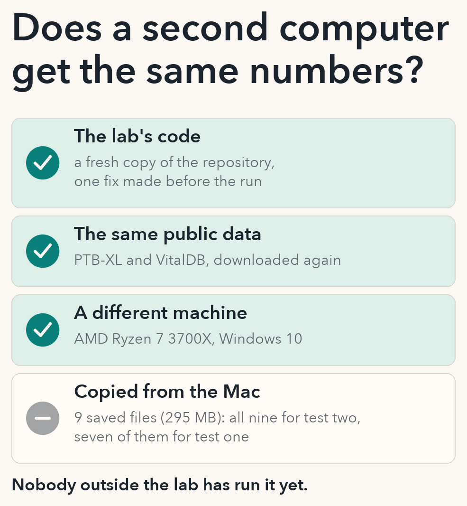
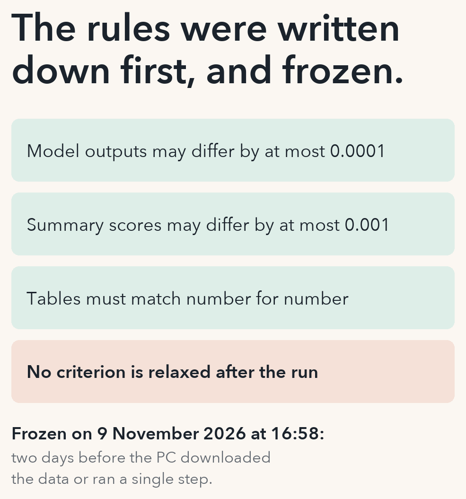
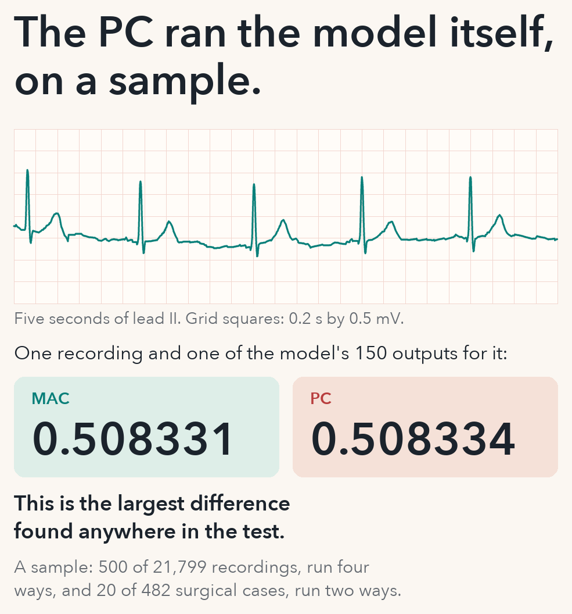
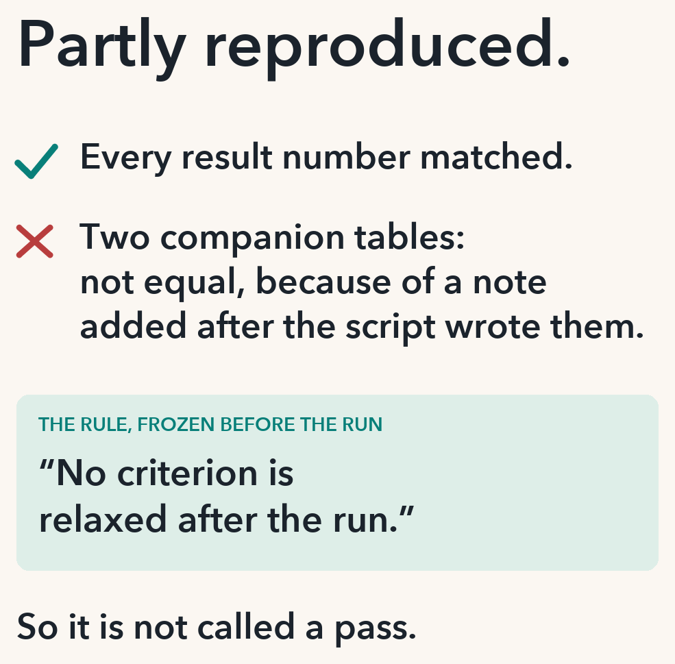

Pertzel Lab · Season 1 · Week 5
Every result number matched on a second computer. The check still failed.
Under rules frozen before the run, that is partly reproduced, not a pass.
Week 4 ended on a plain admission: every number on that page came out of one laptop. So this week I tested my own work instead of the model, under rules for what counts as “the same” that were frozen two days before the run. The lab’s own Windows PC ran the model itself on a sample of the raw recordings: 896,700 outputs, the largest difference from my Mac 0.000003 against a limit of 0.0001. From my Mac’s saved model outputs it then rebuilt every results table: all ten number files and nine of the eleven tables came back equal, including the six main ones. The two that failed did not fail on a result. A note had been added to them after the script wrote them, so the rebuilt copies came back nine numbers short, and all nine are inside the note. The rule I froze says that is not a pass. The result is “partly reproduced”.
Do my own results travel?
This season asks how well an ECG model travels. Week 2 checked one of ECGFounder’s published results on PTB-XL, a public set of resting ECGs. Week 4 scored its single-lead version on recordings made during surgery. This week turns the question on my own work: if someone took my code and the same public data and ran it all again, would they get my numbers?
I can’t be someone else. The next best thing is a second computer: running everything again on a different machine is close to simulating what another person would have to do to reproduce my work.
“Everything” means the season so far: Week 2’s twelve-lead check on PTB-XL, the single-lead PTB-XL run Week 4 used as its ruler, and Week 4’s surgical recordings from VitalDB, each with and without filtering. Six runs in all.
What the second computer started with matters. The code was a fresh copy made on the night of the run, with one fix made beforehand (see the limits). The public data was downloaded again. The machine was a Windows 10 PC with an AMD Ryzen 7 3700X processor; everything until now had run on my Mac. Nine saved files, 295 MB, were copied across from the Mac: test two worked from all nine, and test one compared against seven of them. So this was not a start from nothing, and nobody outside the lab has run any of this yet. The run was on Wednesday 11 November: 22 commands, about 48 minutes.
New to ECGs and the model?
An ECG records the heart’s electrical activity as a trace. ECGFounder is the trained AI software that reads a trace and makes 150 statements about it. PTB-XL is a public collection of standard ten-second ECG tests; VitalDB Arrhythmia is this season’s test material, surgical recordings with reference labels written by anaesthesiologists.
What was fresh, and what was carried over.
Three things were new on the second computer: the copy of the code, the downloaded data and the machine itself. One thing was carried over from the Mac: nine saved files.


The rules were written down first, and frozen.
“The same” needs a definition before the run, not after it. So the rules were written down first, and on 9 November at 16:58 I froze them, so I couldn’t move the goalposts afterwards. That was two days before the PC downloaded the data or ran a single step. None of the values was chosen on a result.
Four of the rules decide this week.
- Model outputs may differ by at most 0.0001. A model output is one of the numbers the model writes for a recording, between 0 and 1. The protocol expected two processors to differ at the fifth or sixth decimal place and treated anything at the second as a real defect. 0.0001 sits between them.
- Summary scores may differ by at most 0.001. A summary score here is AUROC, the ranking score explained in Week 4.
- Tables must match number for number. No tolerance at all.
- No criterion is relaxed after the run. This is the one that ends up deciding the week.
Four rules, frozen two days before the run.
Three say how close counts as the same. The fourth says the first three cannot be loosened afterwards.


The PC ran the model itself, on a sample.
The strictest version of the question starts from the raw recordings. For test one the PC took the public data it had just downloaded and did the whole path itself: read a recording, prepare it, run the model, save what the model says.
It did not run everything. It ran a sample fixed in the frozen rules: 500 of PTB-XL’s 21,799 recordings, run four ways (twelve leads and lead II alone, each with and without filtering), and 20 of the 482 surgical cases, run two ways. That is about 2 in 100 and 4 in 100: the first 500 recordings in file order and the twenty lowest-numbered cases. So the sample was not chosen on a result, and it is not random either.
For every recording, or every ten-second clip of a surgical case, the model writes 150 numbers, one for each statement it can make about a trace. Across the six runs, 5,978 rows and 896,700 outputs had a counterpart saved on my Mac, and each one was compared with it.
The largest difference anywhere was 0.000003: three millionths. The limit was 0.0001, so the worst case in the whole test is 33 times smaller than the limit. Figure 3 shows that worst case, one output for one PTB-XL recording read from lead II: 0.508331 on the Mac, 0.508334 on the PC. The eight summary scores built from those outputs agree to 12 decimal places, against a limit of 0.001.
One recording, two machines, three millionths apart.
The largest difference found anywhere in test one: one of the model’s 150 outputs for one PTB-XL recording, 0.508331 on the Mac and 0.508334 on the PC.


The limit and the largest difference, drawn to the same scale.
The pale bar is the allowed difference, 0.0001. The solid block under it is the largest difference seen, 0.000003, at the same scale.
![896,700 outputs compared. Largest difference: 0.000003. A full-width pale bar is labelled: allowed difference 0.0001. Under it, a small solid block drawn to the same scale is labelled: largest difference seen 0.000003, 33 times smaller than the limit. Largest difference in each run: PTB-XL, 12 leads 0.000001; PTB-XL, 12 leads, filtered 0.000001; PTB-XL, lead II 0.000003; PTB-XL, lead II, filtered 0.000001; VitalDB 0.000001; VitalDB, filtered 0.000002. All 8 summary scores agree to 12 decimal places. Test one is a sample: the PC did not run the model on the full data.](assets/week5-site-v3-5.png)
Every results table, rebuilt from the saved outputs.
Test two asks a different question, and it did not run the model at all. Think of the model’s saved outputs as the ingredients and the lab’s scripts as the recipe. The saved outputs for the full datasets went across from my Mac, the PC ran the recipe over them again, and each rebuilt file was compared with the one on record.
Two kinds of file come out. Number files are what the scripts write for other scripts to read: ten were rebuilt, and all ten came back with no difference, checked to within one billionth. Tables are the versions a person reads and a write-up quotes. There are eleven, they held 4,024 numbers at the run, and the rule for them was the strict one: equal, number for number.
Nine of the eleven came back equal, including all six main tables, the ones the frozen rules name as carrying the season’s results. Figure 5 shows each one.
Eleven tables rebuilt. Nine equal, two not.
Each box is one results table with the count of numbers it held at the run. A tick means the rebuilt copy matched number for number. The six outlined boxes are the main tables.
![Every results table, rebuilt from the saved outputs. A grid of 11 tables, 9 with a tick and 2 with a cross: Week 2 summary, 239 numbers, equal, outlined; Week 2 scores unfiltered, 183 numbers, equal; Week 2 scores filtered, 183 numbers, equal; Patients reshuffled, 505 numbers, equal, outlined; Lead II scores unfiltered, 193 numbers, not equal; Lead II scores filtered, 193 numbers, not equal; Lead II cut-offs unfiltered, 26 numbers, equal, outlined; Lead II cut-offs filtered, 26 numbers, equal, outlined; Two datasets compared, 312 numbers, equal, outlined; Two datasets cut-off points, 1,943 numbers, equal; With and without filtering, 221 numbers, equal, outlined. Outlined: the 6 main tables, all 6 equal. 10 of 10 number files: no difference. 5,000 reshuffles of patients replayed exactly (61 series). Two large lists rebuilt byte for byte.](assets/week5-site-v3-6.png)
Two tables failed because of a note, not a number.
The two that failed are companion tables: the full score listings for the single-lead PTB-XL run, with and without filtering. Neither is one of the six main tables. The comparison counts the numbers printed in each table. The copy on record held 193. The rebuilt copy held 184.
The nine missing numbers are not results. All nine are inside one paragraph, a note that was added to those two files after the script had written them. This is the note in full:
“Caveat added after the independent review (3 Nov 2026): this is the released 1-lead checkpoint on lead II (check 7); the published 0.924 and the check 1 band 0.914 to 0.934 are 12-lead numbers and do not apply here. The band line above is the script’s fixed wording, not a check.”
Count the numbers in it: 3, 2026, 1, 7, 0.924, 1, 0.914, 0.934 and 12. That is the nine. (The review it mentions was one of the lab’s own checks, made in a separate session, not an outside reviewer.)
The note was true, and useful. The script that writes those tables prints a line measuring the score against the paper’s 0.924 and the band I set around it. Those are twelve-lead numbers; they do not apply to a single-lead run, and the note said so.
What went wrong is where it was put. A file that a script writes is the output of a recipe. Add a line to it afterwards and the copy on record is no longer something the recipe can make: the next time anyone runs the script, on any machine, they get the file without the line. That is exactly what the PC produced. Its two rebuilt tables are, byte for byte, what the script first wrote on 3 November, before the note went in on 4 November. No result number differs.
So this failure says nothing against the second computer: the same check on my Mac would have failed the same way. Something true had been written into the one place a rerun would erase it.
On 12 November the note was moved into a notes file beside the two tables, and the tables went back to what the script writes. That fixes the files. It does not change what the run found on 11 November, and the run is not being repeated for a cleaner answer.
193 numbers on record at the run, 184 rebuilt, nine inside a note.
The note as it stood in the two tables, with its nine numbers picked out in red.
![Two tables failed because of a note, not a number. A box, labelled as added to the two tables after the script wrote them, holds the note, with its 9 numbers picked out in red: “Caveat added after the independent review (3 Nov 2026): this is the released 1-lead checkpoint on lead II (check 7); the published 0.924 and the check 1 band 0.914 to 0.934 are 12-lead numbers and do not apply here. The band line above is the script’s fixed wording, not a check.” Two boxes: committed file, 193 numbers; rebuilt by the script, 184 numbers. The 9 extra numbers are all inside that note. No result number differs. The rebuilt tables are byte for byte what the script first wrote on 3 November. The note sat in the two tables from 4 to 12 November 2026, then was moved beside them.](assets/week5-site-v3-7.png)
Partly reproduced.
I could call that a pass. Every result number matched: the model’s outputs agreed within the limit set in advance, and every rebuilt number in the tables and number files was equal. The only thing that failed is a paragraph of explanation.
The fourth rule was written for exactly this moment: “No criterion is relaxed after the run.” One criterion failed. The frozen rules have a term for that, and it is not “reproduced”. It is “partly reproduced”, with the failed criterion named and its numbers given. That is the result. The rule stops me rounding up.
Every result number matched. It is still not called a pass.
One tick, one cross, and the rule that decides between them.


My number for this model still sits below the paper’s.
One thing has been open since Week 2, and this week bears on it without solving it. When I ran the authors’ twelve-lead model on all 21,799 PTB-XL recordings, its average AUROC over 31 labels came out at 0.8909, with a 95% range of 0.8876 to 0.8938 when whole patients are resampled. The paper reports 0.924, with a range of 0.917 to 0.931 as the paper states it. Before running anything I had set a band for calling that reproduced: 0.914 to 0.934. My number is 0.0331 below the paper’s and outside the band.
Here is what this week adds. Working from my Mac’s saved outputs, the PC rebuilt the same number, 0.8909. And on the 500 recordings where the PC ran the model itself, its outputs matched the Mac’s within the limit. So it does not look like a quirk of my machine.
That is as far as it goes. The PC did not run the model again on all 21,799 recordings, and two machines running the same code on the same files would share any mistake that lives in the code or the files. The gap is unexplained. Nothing here says the paper is wrong, and I am not going to guess at a cause. It goes into the write-up as open.
0.8909 against 0.924, on one scale.
My number with its range on the left. The paper’s with its range on the right, inside the band I set in advance.
![My number for this model still sits below the paper’s. A scale from 0.88 to 0.94. Mine, 0.8909, with a short bar for its 95% range, resampling whole patients, sits to the left. The paper’s, 0.924, with a short bar for its 95% range as the paper states it, sits inside a shaded band set in advance, 0.914 to 0.934. Average score over 31 labels on 21,799 recordings: 0.0331 below the paper’s figure and outside the band. Working from the Mac’s saved model outputs, the PC rebuilt the same number; on a sample of 500 recordings its own outputs matched within the limit. It is still unexplained, and it goes in the write-up as open.](assets/week5-site-v3-9.png)
A partly reproduced result, and the limits around it.
- It was the lab’s own second computer, run by the lab. That is not an independent replication. Nobody outside the lab has run any of this yet.
- Test one is a sample: 500 of 21,799 recordings and 20 of 482 surgical cases, fixed in advance and not random. The PC did not run the model on the full data.
- Test two starts from my Mac’s saved model outputs, so it checks the path from outputs to tables, not the path from raw recordings to outputs.
- The two computers are alike: both ran it on ordinary processors of the same family, with the same pinned software, and no graphics card was used.
- One script was changed between the freeze and the run, so that one step could start on Windows: three of thirteen file names are spelled with backslashes there and would not have matched the Mac’s record. The run’s notes record that no line computing a number was changed. The change was reviewed separately before the run.
- The season’s charts were not rebuilt or compared. This check covers numbers and tables.
- None of this is a statement about any person’s health or about clinical use.
Run the check on your own computer.
The starter pack is public: a guide, the code and the reference files. Download it, open the guide and choose Quick start. It downloads the model and a small set of public recordings, runs the model on them, and compares your outputs with the lab’s.
Quick start has been run on Windows 10 and, from Terminal, on an Intel Mac. It checks a small set of recordings, not the whole study. It has not been run on an Apple Silicon Mac, or by anyone outside the lab. The guide, on the repository’s front page and inside the download, was finalised the day before the Mac run, so it still says the Mac is unverified; the release page says what was run. If you run it, open an issue on the repository with your result, pass or fail: a mismatch is useful information.
It is research software for checking a reproduction. It is not a way to interpret an ECG or to make a health decision.
The write-up, with the failures left in.
Week 6 is the write-up: a preprint setting out the methods, results and limits of the whole season, with the failures left in. Week 2’s average, which I still cannot explain, goes in as open, and this week goes in as partly reproduced. The plan is to submit it next week. A submitted preprint is screened before it appears, so that is planned work, not a completed result.
What surprised me most this week was how careful you have to be for work to reproduce on a different machine. Two things got in the way, and neither was a result: file names spelled the Windows way, and a note in the wrong place. The recipe has to be clean, not only the numbers. So the lesson is small and practical: never patch a file a script writes. Change the script.
Every number on this page, and where it comes from.
| Number | What it is | Status |
|---|---|---|
| 9 Nov, 16:58 · 2 days | When the rules were frozen; how long before the PC downloaded the data or ran a step | Frozen rule; the run’s record |
| 0.0001 · 0.001 | Largest allowed difference in a model output; in a summary score | Frozen rule |
| 500 of 21,799 · 20 of 482 | Test one’s sample: PTB-XL recordings, run four ways; surgical cases, run two ways. About 2 in 100 and 4 in 100 | Frozen rule (the sample); measured (the totals) |
| 5,978 · 150 · 896,700 | Rows compared in test one; model outputs per row; outputs compared | Reproduction run |
| 0.000003 · 33 | Largest difference between the two machines in any output; how many times smaller than the limit | Reproduction run |
| 0.508331 · 0.508334 | The Mac’s and the PC’s output in that worst case, PTB-XL record 365, lead II | Reproduction run |
| 0.000001 to 0.000003 | Largest difference in each of the six runs; Figure 4 lists all six | Reproduction run |
| 8 · 12 | Summary scores compared on the sample; decimal places to which all eight agree | Reproduction run |
| 10 of 10 | Number files rebuilt with no difference, to within one billionth | Reproduction run |
| 9 of 11 · 6 of 6 | Tables rebuilt equal, number for number; the main tables among them | Reproduction run |
| 4,024 | Numbers in the eleven tables on record at the run; Figure 5 gives each table’s count | Reproduction run |
| 193 · 184 · 9 | Numbers in each failing table on record at the run; in its rebuilt copy; the difference, all inside the note | Reproduction run |
| 61 · 5,000 | Series of patient re-draws replayed exactly on the PC; re-draws in each (Figure 5) | Reproduction run |
| 9 · 295 MB · 7 | Saved files copied from the Mac; their size; how many test one compared against | Reproduction run |
| 22 · 48 minutes | Commands in the run of 11 November; how long they took | Reproduction run |
| 13 · 3 | File names in the list the changed comparison reads; how many Windows spells with backslashes | The run’s notes |
| 3 · 4 · 12 Nov | When the script first wrote the two tables; when the note was added; when it was moved out | The lab’s records |
| 0.8909 | Week 2 average AUROC over 31 labels on 21,799 recordings, twelve-lead model; rebuilt on the PC from saved outputs | Measured |
| 0.8876 to 0.8938 | Its 95% range, whole patients resampled 5,000 times | Measured |
| 0.924 · 0.917 to 0.931 | The paper’s average and its 95% range | Published, the paper |
| 0.914 to 0.934 · 0.0331 | The band set in advance for Week 2; how far the lab’s number sits below the paper’s | Set in advance; measured |
- Original ECGFounder paper, version 4 · PDF
- PTB-XL v1.0.3 · Wagner et al. · CC BY 4.0 · downloaded again for test one; record 365 is drawn in Figure 3
- VitalDB Arrhythmia v1.0.0 · Eun et al. · CC BY 4.0 · the labels and metadata
- VitalDB v1.0.0 on PhysioNet · Lee and Jung · CC BY 4.0 · the waveforms
- ECG reproduction starter pack · Pertzel Lab · MIT code, CC BY 4.0 reference files · the pack to run the check yourself
The figures are this week’s carousel drawings, cropped for this page without slide chrome; nothing in them is redrawn. This work does not provide health advice or establish clinical benefit. The authors were contacted on 21 October; no reply is recorded as of 9 November.